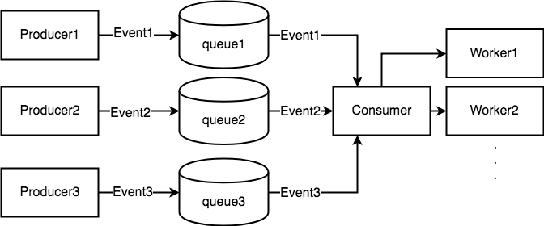

文章简介
kubelet 组件主要负责管理这台机器上面的 pod 的生命周期，以及这台机器的一些状态的更新与上报。这篇文章的目的就在于对 kubelet 整体的设计框架进行分析。并不会对任意一个子功能的细节进行深入的介绍。
kubelet 内部结构
kubelet 内部其实是由多个子模块来构成的，每个子模块都单独负责一部分的任务，而所有的子模块都由下面两个对象来管理，这两个对象也是 kubelet 中最重要的两个对象
kubeletDeps：该对象中包含一系列 kubelet 依赖的外部功能，比如 cadvisor，containerManager(负责 cgroup 管理)。
kubelet：kubelet 对象则代表 kubelet 自身，其中也包括很多子模块，用于完成不同的功能。
那么 kubelet 中各个子模块之间又是如何配合工作的呢？主要是基于生产者消费者的模型。
整个 kubelet 的工作就是在围绕着不同的生产者生产出来的不同的消息来调用相应的消费者完成不同的行为。如下图所示

消息生产者，消费者简述
那么 kubelet 中主要包含哪几个消息的生产者呢？消费者又是怎么消费的呢？
我们可以在 kubelet 的 syncLoopIteration 函数中看到 kubelet 到底同时接收哪几个信息源
|
|
通过代码注释可以看出，kubelet 主要有 5 个不同的信息源
- configCh: 该信息源由 kubeDeps 对象中的 podConfig 子模块提供，该模块将同时 watch 3 个不同来源的 pod 信息的变化（file，http，apiserver），一旦某个来源的 pod 信息发生了更新，这个 channel 中就会出现被更新的 pod 信息和更新操作。
- plegCh: 该信息源由 kubelet 对象中的 pleg 子模块提供，该模块主要用于周期性地向 container runtime 查询当前所有容器的状态，如果状态发生变化，则这个 channel 产生事件。[1]
- syncCh: 该信息源是一个周期性的信号源(默认1秒)，周期性同步所有需要再次同步的 pod。？？？
- liveness manager update: 该信息源是由 kubelet 对象中 livenessManager 管理，当某个容器的 liveness probe 状态发生了变化，则会产生事件。
- housekeepingCh: 该信息源也是一个周期性信号源(默认2秒)，周期性的清理一些无用 pod。
所有的这些消息源产生的消息都由 kubelet 对象统一接受，并且调用相应的功能函数来完成相应的操作。
kubelet 对象自身提供了一系列处理不同对象的 handler 函数，并且暴露成 SyncHandler 接口，其中包含针对不同信息源里不同消息类型的处理函数
|
|
当然，每一个处理函数背后可能都需要 kubelet 对象去调用背后多个内部子模块来共同完成，比如 HandlePodAddition 函数，处理 Pod 的创建，其中可能需要
- 调用 kubelet.podManager 子模块 AddPod 函数，注册该 pod 信息
- 调用 kubelet.podWorker 子模块为这个 Pod 创建单独的 worker goroutine 完成具体的操作
- 调用 kubelet.containerManager 子模块为这个 Pod 创建相应的 Pod Level Cgroup
- 调用 kubelet.volumeManager 子模块为这个 Pod 准备需要被 Mount 到容器中的文件系统
- 调用 kubelet.containerRuntime 子模块真正的创建 Pod 的实体
- ….
所以综上，整个 kubelet 的所有内部子模块就是通过这种生产者消费者模型协调工作，及时将 Pod 以用户期望的状态维护在它所在的机器上。
针对不同的消息来源的不同消息，我们将分别用单独的文章来介绍它实现的细节。
kubelet 节点状态的守护进程
除了上一小节说到的生产者消费者框架，kubelet 中还包括一些子模块为了
- 维护物理机稳定性
- 同步更新物理机配置
等目的，周期性不间断工作的子模块，他们也是 kubelet 中非常重要的一部分。
针对这些子模块的工作模式，我们也将用单独的文章来具体介绍他们的实现细节。